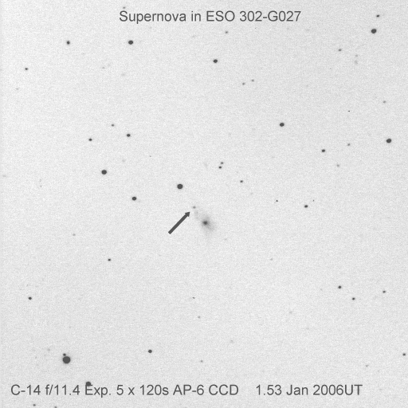

To see the year out, a supernova discovery on my sister's 54th Birthday.
(click on image for larger version)

Electronic Telegram No. 346 Central Bureau for Astronomical Telegrams INTERNATIONAL ASTRONOMICAL UNION M.S. 18, Smithsonian Astrophysical Observatory, Cambridge, MA 02138, U.S.A. IAUSUBS@CFA.HARVARD.EDU or FAX 617-495-7231 (subscriptions) CBAT@CFA.HARVARD.EDU (science) URL http://cfa-www.harvard.edu/iau/cbat.html
SUPERNOVA 2005my IN ESO 302-G27 P. Luckas, Perth, W. Australia; O. Trondal, Oslo, Norway; and M. Schwartz, Patagonia, AZ, report the discovery of an apparent supernova on unfiltered CCD frames taken with the 0.35-m Tenagra telescope at Perth on 2005 Dec. 30.55 (at mag 17.8) and 2006 Jan. 1.53 UT (mag 17.3) in the course of the Tenagra Observatory Supernova Search. SN 2005my is located at R.A. = 4h01m53s.13, Decl. = -41o56'08".3 (equinox 2000.0), which is 15".9 east and 23".0 north of the center of ESO 302-G27 (which itself has position end figures 51s.70, 31".3). Nothing was visible at the position of 2005my on an image taken by Luckas on 2005 Oct. 14.75 (limiting magnitude about 18.5).
Electronic Telegram No. 358
SUPERNOVA 2005my IN ESO 302-G27 M. Salvo and B. Schmidt, Australian National University (ANU); and S. Ryder, Anglo-Australian Observatory, report that a spectrogram (range 370-900 nm), obtained with the ANU 2.3-m telescope (+ Double-Beam Spectrograph) on Jan. 7.53 UT, shows SN 2005my (IAUC 8655) to be a type-II supernova in the late plateau phase; adopting the NED recession velocity for the host galaxy (Mathewson and Ford 1996, Ap.J. Suppl. 107, 97) of cz = 4441 km/s, the expansion velocity measured from the Fe II 492.4- and 501.8-nm lines is 2000 km/s.